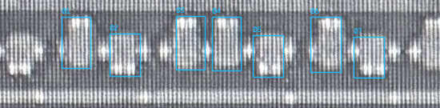
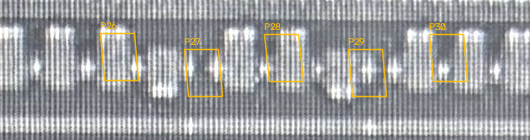

S01 / S02 已审范围：接续基线
S02左两条已确认贴合；S01/S02共8条显示范围全部保留，不再重复核对。下一步核清复杂小栅的数量和AA对应，S03两条独立身份保持。
蓝色只表示本轮候选，橙色为旧候选；未修改窗口的两图相同，用于诊断。
绿色为人工确认的展示范围；主体身份确认与精确边界确认分别记录。
本轮不声称上方全幅识别通过，也不从亮点推断 CT 归属或电连接。
下方已审联合图、F05 和 U10 均未修改。
照片轮廓与规则版图分开保存；本页仅展示原生来源范围修订，尚未批准并入联合版图。
所有范围仍为像素；AA 作为上下文，不进行未经核准的跨层叠加。
最新人工验收 · 范围与检查 · 持久修订输入 ·
局部修订模型（包含未改对象）
S01 · F01：内框上排前四条小栅
用户确认完整覆盖；保持四条范围，绿色显示，不重审。
待核：无；本轮未修改。
POLY 原生范围 [850, 480, 1320, 615]；AA 原生范围 [1000, 690, 1440, 825]。两图仅按结构导航并列，不代表配准或可直接投影。
S02 · F01：内框下排前四条小栅
右侧P03/P04已确认并保护。原来源中心966、1048、1129、1211px；新候选974、1052、1129、1211px。仅左两条分别右移8、4px，宽32及上下端不变。规则atlas四条仍等间距82px，不把照片局部变形写入规则版图。
待核：本组已确认贴合，无待答问题。
POLY 原生范围 [850, 615, 1320, 775]；AA 原生范围 [1000, 835, 1440, 1025]。两图仅按结构导航并列，不代表配准或可直接投影。
S03 · F02：中部不同长度AA与密集小栅
用户确认03/04是两条独立栅，可结合CT辅助区分。本轮保持两条隔离，不合并；其他条及精确边界未获整批批准。
待核：03/04独立身份已确认，不重问；本轮未修改来源轮廓。
POLY 原生范围 [1850, 480, 2400, 615]；AA 原生范围 [1800, 695, 2470, 820]。两图仅按结构导航并列，不代表配准或可直接投影。
独立观察候选（蓝，尚未替换旧对象/编号）

D03 · F03：右侧不等长AA结构
宽AA与密集条纹使旧等间距候选缺少逐栅依据；不把图像条纹或亮点逐个当栅。这里暂不改几何。
待核：本窗口待D02代表结构澄清后重新计数，不要求现在逐条确认。
POLY 原生范围 [2900, 480, 3430, 620]；AA 原生范围 [2800, 700, 3400, 830]。两图仅按结构导航并列，不代表配准或可直接投影。
旧候选（橙）

旧候选保留待核（未修订）

D04 · F04：上部长排的节距变化
不同长度器件交错，照片中的端部不是简单上下交替；旧66槽模板尚无逐对象数量证据。这里暂不改几何。
待核：本窗口保留为待重判，不要求复核整排；不能据此认定当前橙色框就是实际栅。
POLY 原生范围 [4320, 350, 4850, 495]；AA 原生范围 [4180, 565, 4810, 665]。两图仅按结构导航并列，不代表配准或可直接投影。
旧候选保留待核（未修订）